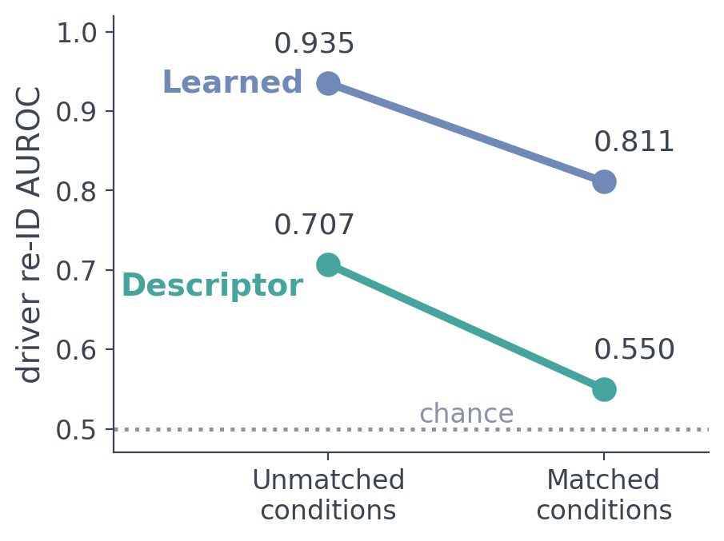

Hold the car, the scenario and the speed regime fixed, and every representation loses — the video-only probe loses most.
Each dumbbell runs from AUROC on unseen drivers (hollow) to AUROC on the 14,868 condition-matched pairs (filled). Classical descriptors fall to chance (.707 → .550). The video-only probe drops from .937 to .675, the largest drop of any representation; the learned CAN encoder holds at .811 ± .006 across all six scenario types.

Story rows at full opacity; the rest dimmed. Table 3 of the paper (paper); "every zero-shot foundation model falls to chance or near it (.55–.60)".